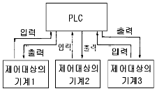
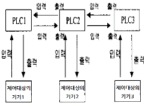
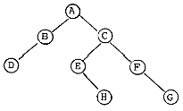
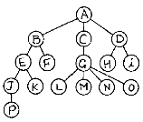
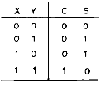
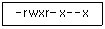
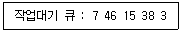
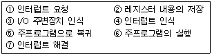
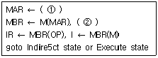

전자계산기조직응용기사 (2004-03-07 기출문제)
1과목: 전자계산기 프로그래밍
1. 제어문에 대한 설명으로 가장 거리가 먼 것은?
- 순차적으로 실행하는 프로그램의 실행 순서를 선택적으로 수행하도록 한다.
- 제어문에는 무조건 제어문과 조건 제어문이 있다.
- 무조건 제어문은 어떤 조건 없이 무조건 지정한 곳으로 제어를 옮긴다.
- 조건 제어문은 여러 경로를 통하여 한꺼번에 여러 경로로 제어를 옮긴다.
(정답률: 85%)

2. 제어 대상물인 기계가 그림과 같이 여러대 있는 것을 1대의 PLC로 제어하는 시스템은?

- 버스 시스템
- 집중 시스템
- 분산 시스템
- 계층 시스템
(정답률: 70%)
3. 어셈블리 명령에서 프로그램의 필요한 기억 장소 확보를 하며, 그 기억 장소에 필요한 초기값은 설정하지 않는 것은?
- DC
- NC
- DS
- DF
(정답률: 73%)
4. PLC에 관한 설명으로 옳지 않은 것은?
- Programmable Logic Controller의 약자이다.
- 일반적으로 시퀀스(Sequence)라고도 불리운다.
- 마이크로컴퓨터 및 메모리를 중심으로 하는 전자회로로 구성되어 있다.
- PLC는 가정용 콘트롤러로 주로 이용된다.
(정답률: 83%)
5. 객체지향 프로그래밍 언어가 소프트웨어 설계상 가장 크게 공헌한 점은?
- 코드의 재사용
- 코드의 효율성
- 코드의 자동성
- 코드의 정확성
(정답률: 65%)
6. C 언어의 비트 연산자가 아닌 것은?
- ^
- <<
- ~
- &&
(정답률: 74%)
7. PLC의 프로그램 방식을 시퀀스 회로를 변화시킨 회로도 방식과 기계 등의 동작을 직접 프로그램한 동작도 방식으로 분류할 경우 회로도 방식에 의한 프로그램의 종류가 아닌 것은?
- 래더도 방식
- 명령어 방식
- 로직 방식
- 플로우챠트 방식
(정답률: 45%)
8. 객체 지향 프로그래밍 방법의 특징으로 거리가 먼 것은?
- 인간이 문제를 해결하는 방법과 유사한 점이 많아 대형 프로그램을 작성하기가 용이하다.
- 구조적 프로그래밍 방법보다 프로그램을 읽기가 쉽다는 장점이 있다.
- 객체 지향 프로그래밍은 자료가 하나의 묶음으로 이루어져 자료 추상화의 개념을 이용한 방법이다.
- 절차 언어, 함수 언어, 논리 언어 등으로 프로그래밍하는 방법을 객체 지향 프로그래밍 방법이라고 한다.
(정답률: 75%)
9. 다음의 C 언어 연산자 중 우선 순위가 가장 낮은 것은?
- =
- ,
- +
- &
(정답률: 54%)
10. C 언어의 기억 클래스 종류가 아닌 것은?
- 내부(internal) 변수
- 자동(automatic) 변수
- 정적(static) 변수
- 레지스터(register) 변수
(정답률: 79%)
11. 어떤 문제를 해결하거나 자료 처리를 위해서 고급 언어 등을 이용하여 사용자가 직접 작성한 프로그램을 의미하는 것은?
- 시스템 프로그램(system program)
- 응용 프로그램(application program)
- 번역 프로그램(translator program)
- 제너럴 프로그램(general program)
(정답률: 84%)
12. C 언어에서 부호 없는 10진 정수를 출력하고자 할 때 printf 문의 변환 문자는?
- %u
- %x
- %c
- %f
(정답률: 72%)
13. 다음 그림은 PLC에 의한 제어 시스템 중 어떤 시스템에 해당하는가?

- 단독 시스템
- 집중 시스템
- 분산 시스템
- 계층 시스템
(정답률: 79%)
14. 어셈블리 언어에서 설명문은 어느 기호를 시작으로 삽입되는가?
- ;
- :
- %
- $
(정답률: 47%)
15. C 언어에서 포인터에 대한 설명으로 옳지 않은 것은?
- 포인터는 메모리 주소를 가질 수 있는 형이다.
- 포인터는 메모리 주소값과 메모리 주소가 가르키는 위치에 있는 값을 다룰 수 있다.
- 포인터의 주소 연산자는 "%"를 이용하여 사용자 임의로 만들 수 있다.
- 배열과 같은 연속된 데이터 집합을 다룰 때 포인터 연산을 이용하면 유용하다.
(정답률: 87%)
16. 고급언어로 작성한 프로그램을 기계어로 번역하였다. 번역 도중에 발생한 문법에러를 모두 수정하여 실행 파일을 만들었으나 실행 결과가 정확하지 않았다. 어떤 프로그램을 이용하면 논리적인 문제점을 검토할 수 있는가?
- 운영체제(operating system)
- 어셈블러(assembler)
- 디버거(debugger)
- 링커(linker)
(정답률: 87%)
17. 주어진 문장이 정의된 문법 구조에 따라 사용할 수 있는가를 검사하여 분석하는 작업을 무엇이라 하는가?
- 어휘 분석
- 구문 분석
- 중간 코드 생성기
- 의미 분석
(정답률: 65%)
18. 어셈블리에서 어드레스 전송명령에 해당하지 않는 것은?
- LDS
- LEA
- LES
- LAHF
(정답률: 39%)
19. C 언어에서 사용되는 반복 구조문이 아닌 것은?
- while 문
- do while 문
- for 문
- if 문
(정답률: 67%)
20. 객체지향 언어에서 비슷한 객체들을 그룹으로 묶어서 그들의 속성과 메소드들을 그룹별로 정의한 것은?
- 애트리뷰트
- 클래스
- 메시지
- 인터페이스
(정답률: 69%)
2과목: 자료구조 및 데이터통신
21. IEEE 802 표준에서는 데이터 링크 계층을 MAC, LLC 두 개의 부계층으로 나누고 있다. 이렇게 두 개로 분리한 가장 적절한 이유는?
- 다양한 MAC 프로토콜 기술을 수용하기 위하여
- 원할한 통신을 위하여
- 고속 통신을 위하여
- 프로토콜의 안정성을 위하여
(정답률: 55%)
22. 주로 하드와이어 전송 매체에서 발생되며, 전송 매체를 통한 신호 전달이 주파수에 따라 그 속도를 달리 함으로써 유발되는 신호 손상을 무엇이라 하는가?
- 감쇠현상
- 잡음
- 지연왜곡
- 누화잡음
(정답률: 30%)
23. 다음과 같은 이진트리(Binary tree)의 운행법(traversal)중 POSTORDER에 의한 결과는?

- ABCDEFHG
- DBAEHCFG
- DBHEGFCA
- ABCDEHFG
(정답률: 67%)
24. 일반적으로 자료를 추가하는데 있어서 해시(hash)함수가 반드시 필요한 file은?
- SAM file
- ISAM file
- DAM file
- VSAM file
(정답률: 64%)
25. 선형리스트(linear list)에 해당하지 않는 자료 구조는?
- stack
- queue
- tree
- deque
(정답률: 79%)
26. indexed sequential file은 일반적으로 세 영역으로 구성된다. 다음 중 세 영역에 포함되지 않는 것은?
- prime area
- access area
- index area
- overflow area
(정답률: 43%)
27. 십진수 "+17"과 "-17"을 2의 보수(2'S Complement) 형태로 옳게 표현한 것은?
- +17 : 00010001, -17 : 10010001
- +17 : 10010000, -17 : 11110010
- +17 : 00010001, -17 : 11101111
- +17 : 00010001, -17 : 11101110
(정답률: 77%)
28. 웹 부라우저에서 지원하지 않는 서비스는?
- 전자 우편 서비스
- FTP 서비스
- HTTP 서비스
- SNMP 서비스
(정답률: 77%)
29. OSI 계층 중 종단간(end-to-end) 제어 기능을 수행하는 계층은?
- 데이터링크 계층
- 네트워크 계층
- 전송 계층
- 세션 계층
(정답률: 69%)
30. 통신 속도가 200[baud]이고, 보오당 스탭 수가 4 일 때 1분 간의 송신 가능 속도는 몇 [bps]인가?
- 12,000
- 24,000
- 48,000
- 96,000
(정답률: 48%)
31. DBMS의 장점에 해당하지 않는 것은?
- 데이터의 중복 최대화
- 데이터의 공용화
- 데이터의 일관성 유지
- 데이터의 무결성 유지
(정답률: 70%)
32. Pivot 원소를 중심으로 왼쪽은 Key 값이 작은것, 오른쪽은 Key 값이 큰 것으로 하여 분해시키는 방식의 정렬(sort)은?
- Bubble 정렬
- Insertion 정렬
- Quick 정렬
- Shell 정렬
(정답률: 59%)
33. 시분할 다중화(TDM)의 설명으로 옳은 것은?
- 상대적으로 고속으로 동작하는 여러 대의 전송장치들이 고속으로 동작하는 하나의 통신 회선을 공유하여 동시에 데이터를 전송하는 방식이다.
- 동기식 시분할 다중화(STDM)는 한 전송회선의 대역폭을 일정한 시간 단위로 나누어 각 채널에 할당하는 방식이다.
- STDM은 대역폭을 감소시키는 효과가 있어, 전체적인 전송 시스템의 성능이 향상되는 장점이 있다.
- 비동기식 시분할 다중화(ATDM)는 헤더 정보를 필요로하지 않으므로, STDM에 비해 시간 슬롯당 정보 전송률이 증가한다.
(정답률: 75%)
34. 스택(stack)과 관계있는 내용은?
- 데이터의 삽입과 삭제가 한쪽 끝에서만 이루어진다.
- 선형 리스트의 양쪽 끝에서 삽입과 삭제가 가능하다.
- 입력은 한쪽에서, 출력은 양쪽에서 이루어진다.
- 선입선출(FIFO) 구조이다.
(정답률: 67%)
35. 데이터 통신에서 에러 비트를 검사하고 정정할 수 있는 오류 제어방식이 아닌 것은?
- CRC 방식
- 해밍부호
- BCH 방식
- ARQ 방식
(정답률: 64%)
36. 아날로그-디지털 부호화 방식인 PCM(Pulse Code Modulation) 과정을 순서대로 바르게 나타낸 것은?
- 표본화(Sampling)→양자화(Quantization)→부호화(Encoding)
- 양자화(Quantization)→부호화(Encoding)→표본화(Sampling)
- 부호화(Encoding)→양자화(Quantization)→표본화(Sampling)
- 표본화(Sampling)→부호화(Encoding)→양자화(Quantization),
(정답률: 77%)
37. 다음 그림과 같은 트리에서 트리의 차수(degree)와 깊이(depth)는 각각 얼마인가?

- 2, 4
- 3, 4
- 3, 5
- 4, 5
(정답률: 77%)
38. 해싱(hashing)에서 동일한 버켓 주소를 갖는 레코드들의 집합을 의미하는 것은?
- collision
- synonym
- slot
- folding
(정답률: 72%)
39. LAN 분류 시 매체 접근 방식에 따른 분류에 해당하지 않는 것은?
- CSMA/CD
- Token Ring
- Token Bus
- LLC(Logical Link Control)
(정답률: 79%)
40. 두 개의 LAN이 데이터 링크 계층에서 서로 결합되어 있는 경우에, 이들을 연결하는 요소를 무엇이라 하는가?
- 브리지(bridge)
- 허브(hub)
- 게이트웨이(gateway)
- 모뎀(modem)
(정답률: 53%)
3과목: 전자계산기구조
41. 리커션(recursion) 프로그램에 해당하는 것은?
- 한 루틴(routine)이 반복될 때
- 한 루틴(routine)이 자기를 다시 부를 때
- 다른 루틴(routine)이 다른 루틴을 부를 때
- 한 루틴(routine)에서 다른 루틴으로 갈 때
(정답률: 55%)
42. 연관 메모리(associative memory)의 특징이 아닌 것은?
- 주소 매핑(mapping)
- 내용 지정 메모리(CAM)
- 메모리에 저장된 내용에 의한 access
- 기억장치에 저장된 항목을 찾는 시간 절약
(정답률: 55%)
43. 논리 마이크로 연산에 있어서 레지스터 A와 B의 값이 단서와 같이 주어졌을 때 selective-set 연산을 수행하면 어떻게 되는가? (단, A는 프로세서 레지스터이고, B는 논리 오퍼랜드, A=1010, B=0011)
- 1100
- 1011
- 0011
- 1010
(정답률: 72%)
44. 인터럽트의 발생 원인으로 적당하지 않은 것은?
- Supervisor Call
- 정전
- 분기 명령의 실행
- 데이터 에러
(정답률: 59%)
45. 인터럽트 요인이 발생했을 때 CPU의 상태를 확인해야 하는데 해당되지 않는 것은?
- 프로그램 카운터의 내용
- 플래그 상태 조건 내용
- 모든 레지스터의 내용
- CPU의 수행 속도
(정답률: 62%)
46. 소프트웨어에 의하여 우선 순위를 판별하는 방법을 무엇이라 하는가?
- 데이지체인
- 폴링
- 핸드쉐이킹
- 인터럽트 벡터
(정답률: 74%)
47. 다음 설명 중 옳지 않은 것은?
- PC는 다음에 실행할 번지를 갖고 있는 레지스터이다.
- 제어 신호는 마이크로 동작이 순서적으로 일어나게 한다.
- fetch 사이클은 CPU가 메모리에서 명령을 가져오는 사이클이다.
- CPU의 제어 장치는 명령 레지스터와 신호 발생장치만으로 구성되어 있다.
(정답률: 85%)
48. 다음 설명 중 부프로그램과 매크로(Macro)의 공통점은?
- 삽입하여 사용한다.
- 분기로 반복을 한다.
- 다른 언어에서도 사용한다.
- 여러번 중복되는 부분을 별도로 작성하여 사용한다.
(정답률: 77%)
49. 가상 기억장치(virtual memory)의 특징이 아닌 것은?
- 컴퓨터의 용량을 확장하기 위한 방법이다.
- 가상기억공간의 구성은 프로그램에 의해서 수행된다.
- 가상기억장치의 목적은 기억공간이 아니라 속도이다.
- 주기억장치와 보조기억장치가 계층기억체제를 이루고 있다.
(정답률: 80%)
50. 데이터 입뺏출력 전송이 CPU를 통하지 않고 직접 주기억장치와 주변장치 사이에서 수행되는 방식은?
- Bus
- DMA
- Cache
- Interleaving
(정답률: 85%)
51. 스택 메모리에 대한 정보의 입曺출력 방식은?
- FIFO
- FILO
- LILO
- LIFO
(정답률: 91%)
52. 컴퓨터의 윈도우 창에 여러 윈도우를 열어놓고 작업하는 것을 주기억장치 처리 방법으로 무엇이라 하는가?
- 보조 프로그램
- 멀티프로세싱
- 멀티프로그래밍
- 리얼타임 프로그램
(정답률: 58%)
53. Half - Adder는 2bit(x,y)를 산술적으로 가산하는 조합회로이며, 이에 해당하는 진리표는 이래와 같다. 캐리(c)와 합(s)를 논리적으로 구한 것은?

- S=x ⊕ y, C=xy
- S=xy+xy', C=x'y
- S=x ⊕ y, C=xy'
- S=xy'+y, C=xy
(정답률: 79%)
54. 기억장치가 아닌 것은?
- 자기 드럼 장치
- 자기 디스크 장치
- 자기 테이프 장치
- 자기 잉크 문자 읽어내기 장치
(정답률: 79%)
55. 하드웨어 우선 순위 인터럽트의 특징은?
- 가격이 싸다.
- 응답속도가 빠르다.
- 유연성이 있다.
- 우선순위는 소프트웨어로 결정한다.
(정답률: 85%)
56. 하드웨어의 특성 상 주기억장치가 제공할 수 있는 정보 전달의 능력 한계를 무엇이라 하는가?
- 주기억장치 밴드폭
- 주기억장치 접근률
- 주기억장치 접근 실패
- 주기억장치사용의 편의성
(정답률: 89%)
57. 0-번지(zero-address) 명령형을 갖는 컴퓨터 구조의 원리는 어느 것을 사용하는가?
- accumulator extension register
- virtual memory architecture
- stack architecture
- micro-programming
(정답률: 83%)
58. 8진수 0.54를 십진수로 나타내면?
- 0.6875
- 0.8756
- 0.7568
- 0.5687
(정답률: 37%)
59. 주기억장치에 기억된 명령을 꺼내서 해독하고, 시스템 전체에 지시 신호를 내는 것은?
- channel
- ALU
- control unit
- I/O unit
(정답률: 69%)
60. 반드시 누산기가 필요한 주소지정방식은?
- 0-Address 주소지정방식
- 1-Address 주소지정방식
- 2-Address 주소지정방식
- 3-Address 주조지정방식
(정답률: 62%)
4과목: 운영체제
61. 운영체제의 운영방식에 관한 설명으로 옳지 않은 것은?
- 하나의 컴퓨터 시스템에서 여러 프로그램들이 같이 컴퓨터 시스템에 입력되어 주기억장치에 적재되고, 이들이 처리장치를 번갈아 사용하며 실행하도록 하는 것을 다중프로그래밍(Multiprogramming)개념이라고 한다.
- 한대의 컴퓨터를 동시에 여러 명의 사용자가 대화식으로 사용하는 방식으로 처리속도가 매우 빨라 사용자는 독립적인 시스템을 사용하는 것으로 인식하는 것을 배치처리(Batch Processing)라고 한다.
- 한 대의 컴퓨터에 중앙처리장치(CPU)가 2개 이상 설치되어 여러 명령을 동시에 처리하는 것을 다중프로 세싱(Multiprocessing) 방식이라고 한다.
- 여러 대의 컴퓨터들에 의해 작업들을 나누어 처리하여 그 내용이나 결과를 통신망을 이용하여 상호 교환되도록 연결되어 있는 것을 분산처리(Distributed Processing) 시스템이라고 한다.
(정답률: 78%)
62. 절대로더에서 각각의 기능과 수행 주체의 연결이 옳지 않은 것은?
- 연결 - 로더
- 재배치 - 어셈블러
- 적재 - 로더
- 기억장소할당 - 프로그래머
(정답률: 50%)
63. 프로세스(Process)의 정의에 대한 설명 중 옳지 않은 것은?
- 동기적 행위를 일으키는 주체
- 실행중인 프로그램
- 프로시저의 활동
- 운영체제가 관리하는 실행 단위
(정답률: 64%)
64. 운영체제에서 커널의 기능이 아닌 것은?
- 프로세스 생성, 종료
- 사용자 인터페이스
- 기억 장치 할당, 회수
- 파일 시스템 관리
(정답률: 72%)
65. UNIX 시스템의 구조 중 사용자와 직접 대화하는 시스템의 한 부분으로, 사용자의 명령을 입력으로 받아 시스템 기능을 수행하는 명령 해석기 역할을 하는 계층은 어느 것인가?
- 커널(kernel)
- 쉘(shell) 프로그램
- 기억장치 관리기
- 스케줄러(scheduler)
(정답률: 74%)
66. 한 프로세스가 공유 메모리 혹은 공유 파일을 사용하고 있을 때 다른 프로세스들이 사용하지 못하도록 배제시키는 제어 기법을 무엇이라고 하는가?
- Deadlock
- Mutual Exclusion
- Interrupt
- Critical Section
(정답률: 56%)
67. UNIX에서 파일 모드가 다음과 같을 때, 옳은 설명은?

- 디렉토리 파일이다.
- 입출력장치 화일이다.
- 어떤 사용자라도 실행시킬 수 있다.
- 어떤 사용자라도 파일의 읽기가 가능하다.
(정답률: 62%)
68. UNIX 에서 파일의 조작을 위한 명령어가 아닌 것은?
- cp
- mv
- ls
- rm
(정답률: 70%)
69. 유닉스의 파일 시스템에서 슈퍼블럭(superblock)에 대한 설명으로 옳지 않은 것은?
- 사용가능한 i-node의 개수를 알 수 있다.
- 부트 스트랩시에 사용되는 코드를 갖고 있다.
- file 시스템마다 각각의 슈퍼블럭을 가지고 있다.
- 사용 가능한 디스크 블럭의 개수를 알 수 있다.
(정답률: 47%)
70. 디스크 스케줄링에서 SCAN 기법을 사용할 경우, 다음과 같은 작업 대기 큐의 작업들을 수행하기 위한 헤드의 총 트랙 이동 거리는? (단, 초기 헤드의 위치는 30 이고, 현재 0번 트랙으로 이동 중이다.)

- 39
- 59
- 70
- 151
(정답률: 45%)
71. 시스템을 설계할 때 최적의 페이지 크기에 관한 결정이 이루어져야만 한다. 페이지 크기에 관한 설명으로 옳지 않은 것은?
- 페이지 크기가 크면 페이지 테이블 공간은 증가한다.
- 입출력 전송시 큰 페이지가 더 효율적이다.
- 페이지 크기가 클수록 디스크 접근 시간 부담이 감소된다.
- 페이지 크기가 작으면 페이지 테이블의 단편화가 발생한다.
(정답률: 47%)
72. 프로세스가 자원을 기다리고 있는 시간에 비례하여 우선순위를 부여함으로써 무기한 문제를 방지하는 기법은?
- 노화(aging) 기법
- 재사용(reusable) 기법
- 환형대기(circular wait)
- 치명적인 포옹(deadly embrace)
(정답률: 62%)
73. SJF 방식의 단점을 보완하기 위해 대기시간을 고려한 프로세스의 응답률로 프로세스의 우선순위를 결정하는 프로세스 스케줄링 방법은?
- 우선순위(Priority) 스케줄링
- 다단계큐(Multilevel Feedback Queue) 스케줄링
- HRN 스케줄링
- Round-Robin 스케줄링
(정답률: 63%)
74. 매크로 프로세스가 수행해야 하는 기본적인 기능에 해당하지 않는 것은?
- 매크로 구문 인식
- 매크로 호출 인식
- 매크로 정의 인식
- 매크로 정의 저장
(정답률: 72%)
75. 병렬 처리 시스템의 형태 중 분리수행(Separate - Execution)의 설명으로 틀린 것은?
- 한 프로세서의 장애는 전시스템에 영향을 미치지 않는다
- 하나의 주프로세서와 나머지 종프로세서로 구성된다.
- 프로세서별 자신만의 파일 및 입출력장치를 제어한다.
- 프로세서별 인터럽트는 독립적으로 수행된다.
(정답률: 60%)
76. 파일 구성 방식 중 ISAM(Indexed Sequential Access - Method)의 물리적인 색인 구성은 디스크의 물리적 특성에 따라 색인(index)을 구성하는데, 다음 중 3단계 색인에 해당되지 않는 것은?
- 실린더 색인(cylinder index)
- 트랙 색인(track index)
- 마스터 색인(master index)
- 볼륨 색인(volume index)
(정답률: 80%)
77. 하나의 프로세스가 작업 수행 과정에서 수행하는 기억 장치 접근에서 지나치게 페이지 폴트가 발생하여 프로세스 수행에 소요되는 시간보다 페이지 이동에 소요되는 시간이 더 커지는 현상은?
- 스레싱(thrashing)
- 워킹세트(working set)
- 세마포어(semaphore)
- 교환(swapping)
(정답률: 91%)
78. 디렉토리 구조 중 가장 간단한 형태로 같은 디렉토리에 시스템에 보관된 모든 파일 정보를 포함하는 구조는?
- 일단계 디렉토리
- 트리 구조 디렉토리
- 이단계 디렉토리
- 비주기 디렉토리
(정답률: 92%)
79. SSTF 기법을 사용하는 경우, 헤드의 현재 위치가 53 트랙이고(그전의 위치는 59 트랙이었음), 요구 큐에는 [ 98, 180, 37, 64, 10, 28 ]의 트랙번호가 저장되어 있다. 헤드는 몇 번 트랙으로 이동하겠는가?
- 10
- 28
- 37
- 64
(정답률: 67%)
80. 한 프로세스에서 사용되는 각 페이지마다 시간 테이블을 두어 현 시점에서 가장 오랫동안 사용되지 않은 페이지를 교체하는 알고리즘은?
- LFU
- FIFO
- LRU
- NUR
(정답률: 47%)
5과목: 마이크로 전자계산기
81. 입/출력 장치와 CPU 사이에 자료 교환시에 사용되는 기법들이다. 성격이 다른 것은?
- Parity bit 전송
- Synchronous 전송
- Cyclic redundancy character 전송
- echo back
(정답률: 42%)
82. 어드레스 선이 16비트로 구성되고, 데이터 선이 4비트로 구성 되어있는 메모리의 총 용량은?
- 64KB
- 32KB
- 16KB
- 8KB
(정답률: 24%)
83. 데이터가 전송되는 정도를 나타내는 것은?
- 보 레이트(baud Rate)
- 듀티 팩터(duty factor)
- 클럭 레이트(clock Rate)
- 스케일 팩터(scale factor)
(정답률: 75%)
84. 256 x 2램(RAM)으로 주소100016 ~ 17FF16 사이의 기억장치를 구성하려면 몇 개나 필요한가? (단, 기억장치 한 번지는 8비트로 되어 있다.)
- 8
- 16
- 32
- 64
(정답률: 43%)
85. 다음 중 휘발성 메모리가 아닌 것은?
- dynamic RAM
- CCD
- static RAM
- magnetic bubble
(정답률: 알수없음)
86. 기억장치 중 임의 접근 기억장치(Random Access Memory)가 아닌 것은?
- Core Memory
- Magnetic Tape
- RAM
- ROM
(정답률: 77%)
87. 마이크로 전자계산기에서 하나 이상의 비트나 문자를 일시적으로 기억시키는 장치는?
- Buffer
- Address
- Register
- Counter
(정답률: 65%)
88. CPU가 무엇을 하고 있는가를 나타내는 상태를 무엇이라 하는가?
- Fetch state
- Major state
- Stable state
- Unstable state
(정답률: 60%)
89. 반도체 메모리의 내부 구성 요소가 아닌 것은?
- 기억부
- 해독부
- 연산부
- 제어부
(정답률: 42%)
90. 연산장치에서 수행하는 산술연산 및 논리연산의 결과를 일시적으로 저장하는 것을 무엇이라 하는가?
- Accumulator
- Instruction Register
- Program Counter
- ALU
(정답률: 85%)
91. 가장 나중에 기억된 장치가 가장 먼저 출력되는 기억장치는?
- stack
- Queue
- FIFO
- register
(정답률: 67%)
92. 인터럽트 요청 및 서비스에 관한 순서가 옳게 된 것은?

- ①-②-③-④-⑦-⑤-⑥
- ①-④-②-③-⑦-⑤-⑥
- ①-④-③-②-⑦-⑤-⑥
- ①-②-④-③-⑦-⑤-⑥
(정답률: 64%)
93. 번역어(Translator)에 속하지 않는 것은?
- Assembler
- Loader
- Interpreter
- Compiler
(정답률: 75%)
94. 버퍼에 관한 설명 중 거리가 먼 것은?
- 입/출력 장치와 중앙처리기의 처리속도 차이 때문에 필요하다.
- 주기억 장치의 물리적인 주소공간을 확장시키기 위해서 필요하다.
- 중앙처리기와 주기억 장치 사이에 둘 수 있는 버퍼로는 캐시 메모리가 있다.
- 입/출력을 효과적으로 수행하기 위해서 두개 이상의 버퍼를 둘 수 있다.
(정답률: 84%)
95. 마이크로 전자계산기에서 사용되는 버스가 아닌 것은?
- 주소 버스
- ALU 버스
- 제어신호 버스
- 데이터 버스
(정답률: 77%)
96. 마이크로컴퓨터를 위한 대규모 프로그램을 개발하려고 할 때 마이크로컴퓨터를 사용하여 어셈블하려면 여러가지 제한(메모리 용량, 입曺출력장치의 제한 등)을 받게된다. 이 때 이용할 수 있는 소프트웨어 유틸리티(Utility)는?
- Cross assembler
- Debugger
- Screen editor
- simulator
(정답률: 93%)
97. CPU와 여러 개의 I/O 장치가 연결되어 있을 때 I/O를 하나씩 순차적으로 점검하여 인터럽트를 요구한 I/O를 찾아내는 인터럽트 방식을 무엇이라고 하는가?
- 벡터링(vectoring)
- 폴링(polling)
- 매핑(mapping)
- 멀티플렉싱(multiplexing)
(정답률: 70%)
98. 컴퓨터 제어 장치의 기본 사이클에 속하지 않는 것은?
- Fetch Cycle
- Direct Cycle
- Execute Cycle
- Interrupt Cycle
(정답률: 70%)
99. 전자계산기의 제어 상태 중 명령을 인출하여 해독하는 단계인 Fetch State에 대한 마이크로 오퍼레이션이다. 괄호 부분을 완성하시오.

- ① PC, ② PC ← PC+1
- ① IR, ② IR ← IR+1
- ① MBR, ② PC ← PC+1
- ① PC, ② MAR ← PC+1
(정답률: 80%)
100. 운영 체제의 목적이라고 볼 수 없는 것은?
- 신뢰도(reliability)의 향상
- 처리 능력(throughput)의 향상
- 컴퓨터 모델의 다양화
- 응답 처리 시간(turnaround time)의 단축
(정답률: 75%)
조건 제어문은 여러 개의 조건을 판단하여 각각 다른 경로로 제어를 옮길 수 있습니다. 따라서 여러 경로를 통해 제어를 옮길 수 있습니다. 예를 들어, if-else문에서 조건에 따라 if 블록 또는 else 블록으로 제어를 옮길 수 있습니다.
반면에 무조건 제어문은 조건 없이 항상 같은 곳으로 제어를 옮기기 때문에, 다른 경로로 제어를 옮길 수 없습니다. 예를 들어, goto문은 항상 지정한 레이블로 제어를 옮기기 때문에 다른 경로로 제어를 옮길 수 없습니다.